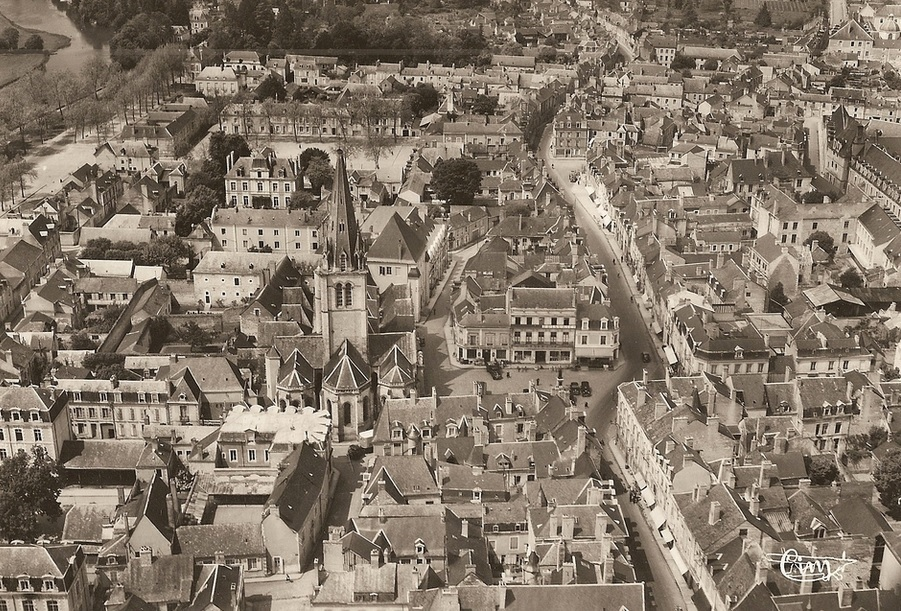
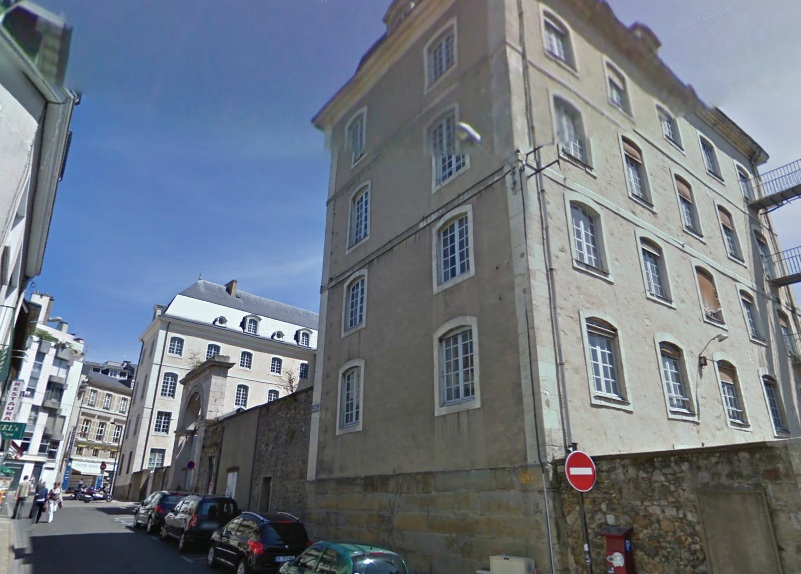
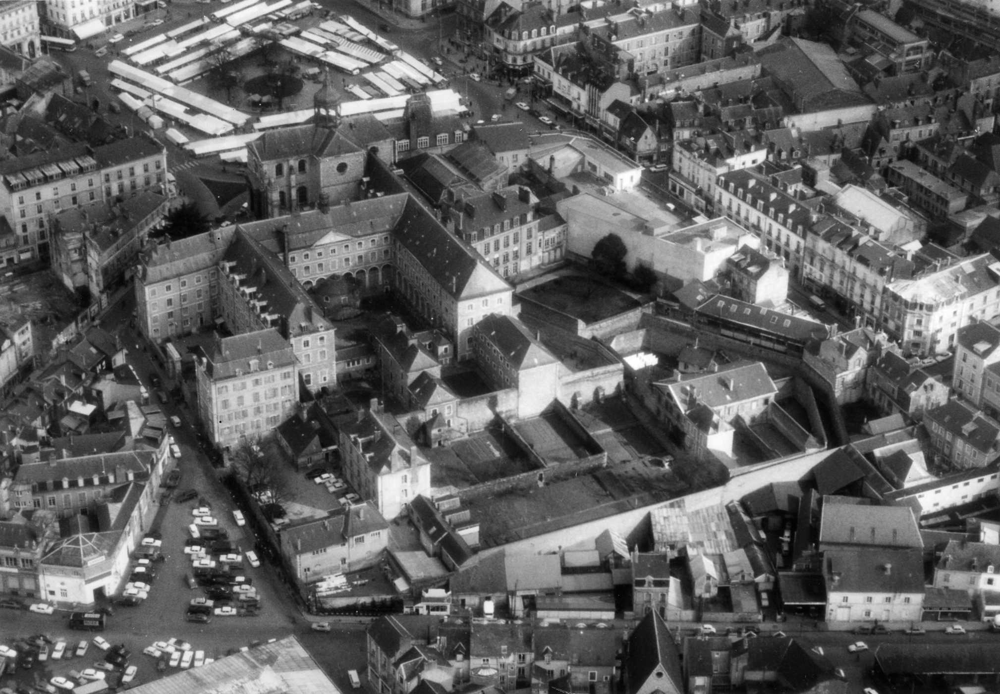
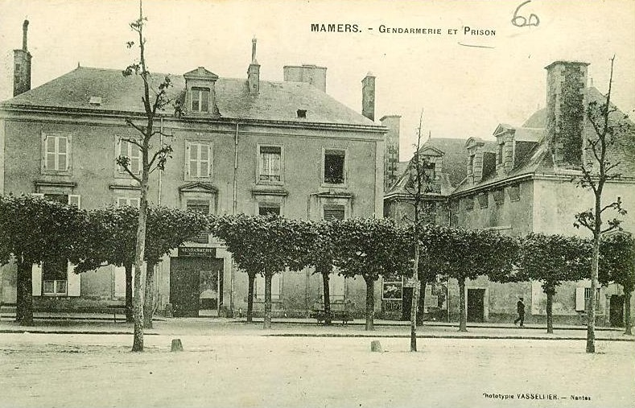
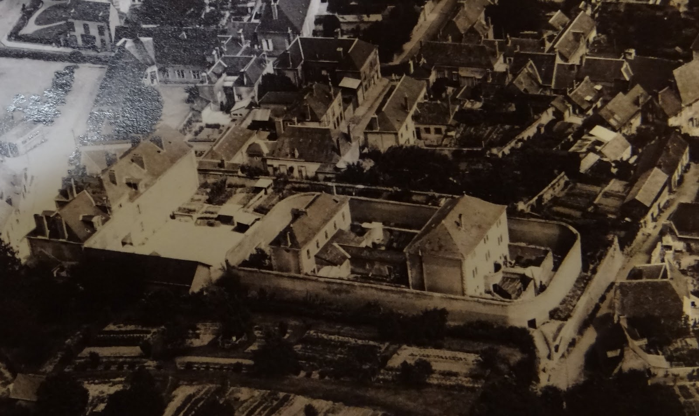
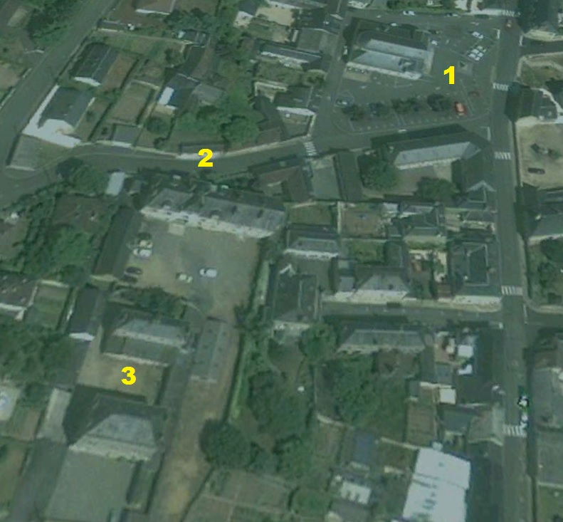

| Département | Images | Ville | Nom | Adresse | Période | Capacité | Histoire du lieu | Nombre d'exécutions |
| Sarthe (72) |  |
La Flèche | Maison d'arrêt et de correction | 3, Rue Saint-Thomas | 1807-1953 | Ancien Hôtel-Dieu. Entre 30 et 50 détenus. Fermée en 1926, réouverte en 1931, fermée en 1933, réouverte en 1943 pour dix dernières années. Rasée en partie en 1958. En 2009, suite à la fermeture d'autres tribunaux, l'ancien bâtiment est relié à celui du tribunal pour agrandir les locaux du palais de justice. Sur la photo, le tribunal est l'immeuble au toit pointu juste à la droite du clocher, la prison est au même niveau à gauche. |
Aucune exécution. | |
| Sarthe (72) |   |
Le Mans | Prison du Vert-Galant | 1, rue du Vert-Galant | 1793-2010 | 100 places, 22 surveillants (1962) 51 places (2010) |
Ancien couvent de la Visitation. Le Mans accueillit un bon nombre de fois la bascule à Charlot devant ses portes. Emonet en 1892, Doilin en 1910, Hamet en 1911, Tisseau et Nolot en 1912, Auxerre en 1913, et enfin Nicolas en 1932 furent les derniers exécutés en public dans la Sarthe. La guillotine fit deux visites dans la cour du Vert-Galant en 1947 (Tranchard) et enfin, en 1949. Le condamné était un certain Diner.Désaffectée en janvier 2010, prisonniers transférés à la nouvelle prison de Coulaines. | Six exécutions en 1910, 1911, 1913, 1932, 1947 et 1949 |
| Sarthe (72) |  |
Mamers | Maison d'arrêt et de correction | Place de la République | 1792-1934 | Ancien couvent des Visitandines. Prison militaire sous la révolution, travaux entre 1816 et 1820, partie est du bâtiment et de l'ancienne chapelle. Environ trente détenus. Fermée en 1926, réouverte en 1931. | Aucune exécution | |
| Sarthe (72) |   |
Saint-Calais | Maison d'arrêt et de correction | Impasse du Geai | 1861-1955 | Construite pour remplacer la prison située jusqu'alors dans la tour de l'abbaye bénédictine, la maison d'arrêt de Saint-Calais (3) est construite, vingt ans après le tribunal (1), à proximité de ce dernier, plus exactement à l'arrière de la gendarmerie nationale (2), laquelle donne sur le Marché-aux-Chevaux (ou place du Mail). Très petite - à tel point qu'elle ne compte qu'un seul gardien, époux de la surveillante de la prison de Mamers (!) -, elle est constituée de deux corps de bâtiments reliés par une galerie couverte, et entourés par une enceinte ovale. Fermée en 1926, rouverte en 1943, elle existe encore, même si la galerie et probablement le mur d'enceinte ont été démolis depuis. Sur la première photo, la place du tribunal se voit à l'extrême gauche, le bâtiment séparant la prison de la place étant la gendarmerie. | Aucune exécution |
{kind=link}
{kind=link}
{kind=link}
{kind=link}
{kind=link}
{kind=link}